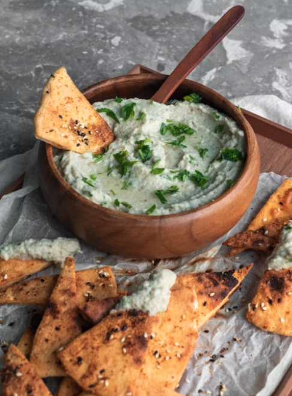

Gaga for Baba Ghanoush

Gaga for Baba Ghanoush
You're gonna go crazy for this baba ghanoush. It's smooth, smoky, salty, zesty.
It may result in a frenzie of ravenous consumption - you have been warned.
It's also vegan, gluten-free, plant-based and keto friendly - if you care about that stuff.
Ingredients
- 4 small to medium eggplants (large is fine, but smaller are tastier and easier to cook).
- 3 cloves of garlic - minced / finally copped.
- 3 tablespoons of lemon juice.
- 1/4 cup extra virgin olive oil - you will need extra to brush eggplant for roasting.
- 1/4 cup tahini.
- 1 tsp chilli flakes.
- 1 tsp salt.
- 1/4 tsp cumin.
- Smoked paprika and cayenne pepper are optional, but a pinch of both can elevate this dish.
Cooking instructions
- Preheat oven to 230°C. Line a shallow oven try with baking paper. Cut eggplants in half lenthways. Make a crosshatch pattern with a knife along the surface of the eggplant.
- Rub salt into the surface of the eggplant and let it sit for 30 mins. Once the time is up, you'll find beads of moisture over the eggplant. The salt has drawn out bitter tasting moisture.
- Use a cloth or paper towel to pat down and dry the moisture off the eggplant. Brushy the eggplant all over with olive oil and place them facedown on the baking tray.
- Roast for 45 mins to an hour - until skin is wrinkled and the inside is very soft. Take out of oven and let rest for 5 mins.
- Flip eggplants and scoop out the flesh with a large spoon - try not to get any skin in the mix.
- Place mixture in a mesh straiuner over a bowl and remove moisture by letting it rest for a further 5 mins in the strainer.
- Stir in the salt, cumin, parsley, paprika and cayenne pepper and season to taste - I normally add more salt and lemon.
- Place into a serving bowl, drizzle a bit more olive oil on top and service! It's fantastic with corn chips or carrot sticks, or even on some nice sourdough.